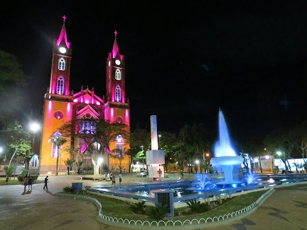

Votuporanga é um município localizado no interior do estado de São Paulo.
A cidade foi fundada em 8 de agosto de 1937 e seu nome tem origem indígena.
Ao longo dos anos, Votuporanga se desenvolveu e se tornou um importante centro comercial e de serviços da região noroeste paulista.
A cidade também possui forte presença na área educacional, recebendo estudantes de diferentes cidades.
O nome da cidade tem origem tupi e significa "bons ares" ou "brisa boa".

Praça central e Catedral de Votuporanga
Pontos turísticos
Um dos principais pontos de lazer da cidade é o Parque da Concha Acústica, localizado no centro, ideal para caminhadas e eventos culturais.
Outro destaque é a Cidade Universitária, que abriga importantes instituições de ensino superior.
Parque da Concha Acústica
Curiosidades
Votuporanga é amplamente conhecida na região noroeste paulista pela sua alta qualidade de vida, organização urbana e forte polo educacional sendo considerada uma das melhores cidades de médio porte para se viver.